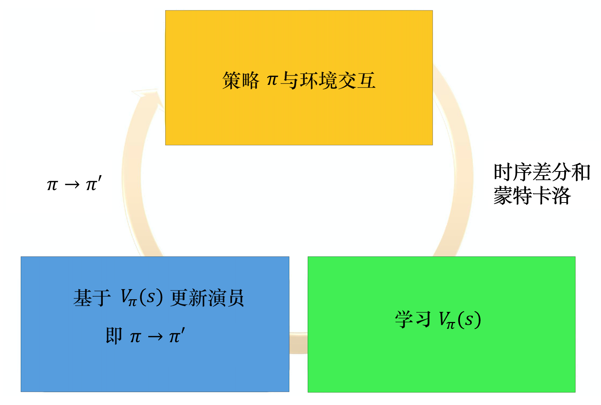

强化学习基础巩固（六）——演员-评论员算法（AC）
之前的章节复习了基于值函数的方法（DQN）和基于策略的方法（REINFORCE），其中基于值函数的方法只学习一个价值函数，而基于策略的方法只学习一个策略函数。那么，一个很自然的问题是，有没有什么方法既学习价值函数，又学习策略函数呢？答案就是 Actor-Critic。Actor-Critic 是囊括一系列算法的整体架构，目前很多高效的前沿算法都属于 Actor-Critic 算法，本章接下来将会介绍一种最简单的 Actor-Critic 算法。需要明确的是，Actor-Critic 算法本质上是基于策略的算法，因为这一系列算法的目标都是优化一个带参数的策略，只是会额外学习价值函数，从而帮助策略函数更好地学习。
演员-评论员算法AC
在 REINFORCE 算法中，目标函数的梯度中有一项轨迹回报，用于指导策略的更新。REINFORCE 算法用蒙特卡洛方法来估计，能不能考虑拟合一个值函数来指导策略进行学习呢？这正是 Actor-Critic 算法所做的。在策略梯度中，可以把梯度写成下面这个更加一般的形式：
其中，可以有很多种形式：
- ：即整条轨迹的总回报
- ：即执行之后的回报
- ：即增加了基线优化，让奖励有正有负。
- ：动作价值函数
- ：优势函数
- ：时序差分残差
REINFORCE 通过蒙特卡洛采样的方法对策略梯度的估计是无偏的，但是方差非常大。我们可以用形式3引入基线函数来减小方差。此外，我们也可以采用 Actor-Critic 算法估计一个动作价值函数，代替蒙特卡洛采样得到的回报，这便是形式4。这个时候，我们可以把状态价值函数作为基线，从函数减去这个函数则得到了函数，我们称之为优势函数，这便是形式5。更进一步，我们可以利用等式得到形式6。
本节重点介绍形式6，即通过时序差分残差来指导策略梯度进行学习。事实上，用值或者值本质上也是用奖励来进行指导，但是用神经网络进行估计的方法可以减小方差、提高鲁棒性。除此之外，REINFORCE 算法基于蒙特卡洛采样，只能在序列结束后进行更新，这同时也要求任务具有有限的步数，而 Actor-Critic 算法则可以在每一步之后都进行更新，并且不对任务的步数做限制。
我们将 Actor-Critic 分为两个部分：Actor（策略网络）和 Critic（价值网络）。
- Actor 要做的是与环境交互，并在 Critic 价值函数的指导下用策略梯度学习一个更好的策略。
- Critic 要做的是通过 Actor 与环境交互收集的数据学习一个价值函数，这个价值函数会用于判断在当前状态什么动作是好的，什么动作不是好的，进而帮助 Actor 进行策略更新。
Actor 的更新采用策略梯度的原则，那 Critic 如何更新呢？我们将 Critic 价值网络表示为，参数为。于是，我们可以采取时序差分残差的学习方式，对于单个数据定义如下价值函数的损失函数：
与 DQN 中一样，我们采取类似于目标网络的方法，将上式中作为时序差分目标，不会产生梯度来更新价值函数。因此，价值函数的梯度为：
然后使用梯度下降方法来更新 Critic 价值网络参数即可。
Actor-Critic 算法的具体流程如下：
- 初始化策略网络参数，价值网络参数
- for 序列 do :
- 用当前策略采样轨迹
- 为每一步数据计算:
- 更新价值参数
- 更新策略参数
- end for
优势演员-评论员算法A2C
如果把定义为形式5，即，即为优势演员-评论员算法A2C。如果我们这么实现，有一个缺点，即我们需要估计两个网络————Q网络和V网络，估计不准的风险就变成原来的两倍。所以我们何不只估计一个网络呢？事实上，在演员-评论员算法中，我们可以只估计网络 V，并利用的值来表示的值，可以写成的期望值，即
在状态采取动作，我们会得到奖励，进入状态。但是我们会得到什么样的奖励，进入什么样的状态，这件事本身是有随机性的。所以要把取期望值才会等于Q函数的值。但我们现在把取期望值去掉，即
我们就可以把Q函数的值用取代，可得
把取期望值去掉的好处就是我们不需要估计了，只需要估计。但与此同时我们会引入一个随机的参数。是有随机性的，它是一个随机变量，但是相较于累积奖励 是一个较小的值，因为它是某一个步骤得到的奖励，而是所有未来会得到的奖励的总和，的方差比较大。虽然也有一些方差，但它的方差比的要小。所以把原来方差比较大的换成方差比较小的也是合理的。
Q：为什么我们可以直接把取期望值去掉？
A：原始的异步优势演员-评论员算法的论文尝试了各种方法，最后发现这个方法最好。当然有人可能会有疑问，说不定估计和也可以估计得很好，但实际做实验的时候，最后结果就是这个方法最好，所以后来大家都使用了这个方法。
优势演员-评论员算法的流程如下图所示，我们有一个，有个初始的演员与环境交互，先收集资料。在策略梯度方法里收集资料以后，就来更新策略。但是在演员-评论员算法里面，我们不是直接使用那些资料来更新策略。我们先用这些资料去估计价值函数，可以用时序差分方法或蒙特卡洛方法来估计价值函数。接下来，我们再基于价值函数，使用下式更新
有了新的以后，再与环境交互，收集新的资料，去估计价值函数。再用新的价值函数更新策略，更新演员。整个优势演员-评论员算法就是这么运作的。

异步优势演员-评论员算法A3C
异步优势演员-评论员算法的运作流程，如图所示，异步优势演员-评论员算法一开始有一个全局网络（global network）。全局网络包含策略网络和价值网络，这两个网络是绑定（tie）在一起的，它们的前几个层会被绑在一起。 假设全局网络的参数是，我们使用多个进程，每个进程用一张 CPU 去跑。比如我们有 8 个进程，则至少 8 张 CPU。每一个进程在工作前都会把全局网络的参数复制过来。接下来演员就与环境交互，每一个演员与环境交互的时候，都要收集到比较多样的数据。例如，如果是走迷宫，可能每一个演员起始的位置都会不一样，这样它们才能够收集到比较多样的数据。每一个演员与环境交互完之后，我们就会计算出梯度。计算出梯度以后，要用梯度去更新参数。我们就计算一下梯度，用梯度去更新全局网络的参数。就是这个进程算出梯度以后，就把梯度传回给中央的控制中心，中央的控制中心就会用这个梯度去更新原来的参数。
注意，A3C使用了平行探索的方法，所有的演员都是平行跑的，每一个演员各做各的，不管彼此。所以每个演员都是去要了一个参数以后，做完就把参数传回去。当第一个进程做完想要把参数传回去的时候，本来它要的参数是，等它要把梯度传回去的时候，可能别人已经把原来的参数覆盖掉，变成了。但是没有关系，它一样会把这个梯度就覆盖过去。

Q&A
Q：实现演员-评论员算法的时候有哪些技巧？
A：
- 预估两个网络：一个是价值网络；另外一个是策略网络。价值网络的输入是一个状态，输出是一个标签；策略网络的输入是一个状态，输出是一个动作的分布。这两个网络中，演员和评论员的输入都是状态，所以它们前面几层是可以共享的。例如，玩雅达利游戏时，输入都是图片。输入的图片都非常复杂，且比较大，通常前期我们都会用一些卷积神经网络来处理这些图片，把图片抽象成深层次的特征，这些网络对演员与评论员网络来说是可以共用的。我们可以让演员与评论员的前面几层共用同一组参数，这一组参数可能是卷积神经网络中的参数。先把输入的像素变成比较高维度的特征信息，然后输入演员网络决定要采取什么样的动作，评论员网络使用价值函数计算期望奖励。
- 探索机制：其目的是对策略的输出分布进行限制，从而使得分布的熵不要太小，即希望不同的动作被采用的概率平均一些。这样在测试的时候，智能体才会多尝试各种不同的动作，才会对环境进行充分探索，从而得到比较好的结果。